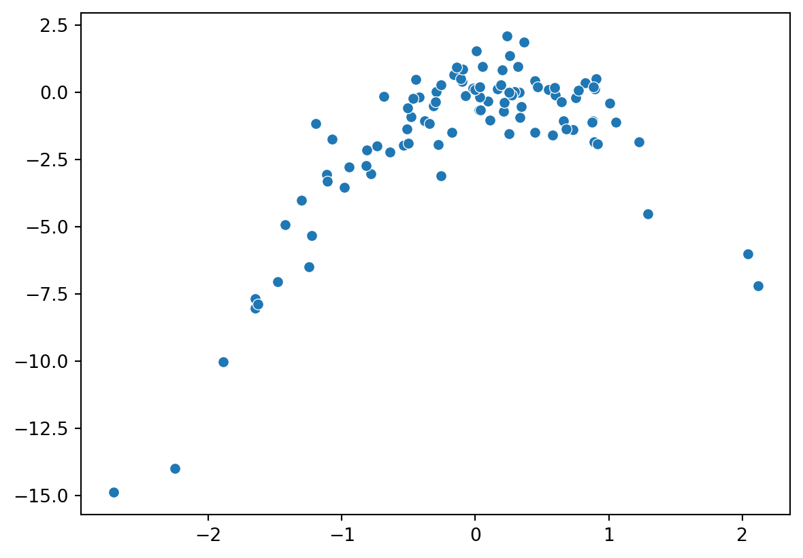

import numpy as np
rng = np.random.default_rng(1)
x = rng.normal(size=100)
y = x - 2 * x**2 + rng.normal(size=100)Exercise 5.4.8
We will now perform cross-validation on a simulated data set.
(a)
Generate a simulated data set as follows:
In this data set, what is n and what is p? Write out the model used to generate the data in equation form.
The sample size is \(n=100\). The number of covariates is \(p=2\) (recall that both \(x^2\) and \(x\) must be counted separately). The data-generating process is \(Y=X+X^2+\epsilon\), where \(\epsilon\) is standard normal, i.e., a normal with unit variance and zero mean.
(b)
A scatterplot can be made using either seaborn or pylab. We go for seaborn here.
import seaborn as sns
import matplotlib.pylab as plt
sns.scatterplot(x=x, y=y)
plt.show()
The plot shows that \(y\) is roughly a quadratic function of \(x\), but with some error added. We already knew this from the model equation.
(c)
Set a random seed, and then compute the LOOCV errors that result from ftting the following four models using least squares […]
This exercise can be solved in two ways: (i) Using the formula (5.2) in the book, (ii) Fitting all regression models separately. The first approach is by far the fastest one. Sadly, the book does not provide an expression for the LOOCV error for multiple linear regression, as it misses the crucial leverage \(h_i\), so we go with (ii). (Tip: If this were an exam exercise, you would probably get bonus points if you were to find the correct formula for \(h_i\)!)
We’ll use the cross_validate / LeaveOneOut functions from scikit learn; see the solutions to Exercise 5.4.7 for more details. Moreover, we need the LinearRegression function.
from sklearn.model_selection import cross_validate
from sklearn.model_selection import LeaveOneOut
from sklearn.linear_model import LinearRegressionNow let’s make a function that calculates the LOOCV score (mean squared error) for us.
def loocv(X, y, fitter):
"""Calculate the loocv for covariates x, responses y, and a fitter."""
cv = LeaveOneOut()
loo = cross_validate(fitter, X, y, cv = cv, scoring = "neg_mean_squared_error")
return -loo["test_score"].mean()Now we can apply this function to all the models we’re asked to investigate. The code below does the job, but there are far more elegant solutions. (Notice that I do not use a for loop!)
import pandas as pd
fitter = LinearRegression()
X = pd.DataFrame({"x":x})
out = dict()
out["x"] = loocv(X,y,fitter)
X["x^2"] = x**2
out["x^2"] = loocv(X,y,fitter)
X["x^3"] = x**3
out["x^3"] = loocv(X,y,fitter)
X["x^4"] = x**4
out["x^4"] = loocv(X,y,fitter)
out{'x': 6.633029839181983,
'x^2': 1.1229368563419677,
'x^3': 1.3017965489358883,
'x^4': 1.3323942694179352}(d)
Repeat (c) using another random seed, and report your results. Are your results the same as what you got in (c)? Why?
There are no random seeds involved in LOOCV unless the fitting algorithm is random, so we will always get the same result. Deviations due to different seeds occur in other forms of cross-validation, however.
(e)
Which of the models in (c) had the smallest LOOCV error? Is this what you expected? Explain your answer.
In exercise (c) we found that the model with “x+x^2” had the smallest error. That is expected, as that is the true model.
(f)
Comment on the statistical signifcance of the coefcient estimates that results from ftting each of the models in (c) using least squares. Do these results agree with the conclusions drawn based on the cross-validation results?
It’s quickest to do this exercise in statsmodels, just recall that you need I(x**2) etc; just using x**2 won’t work. We also use round to three decimal spaces - this is needed to make the output readable. Always round if necessary for the presentation!
import statsmodels.formula.api as smf
data = pd.DataFrame({"x":x,"y":y})
print(round(smf.ols("y~x",data=data).fit().pvalues, 3))
print(round(smf.ols("y~x+I(x**2)",data=data).fit().pvalues, 3))
print(round(smf.ols("y~x+I(x**2)+I(x**3)",data=data).fit().pvalues, 3))
print(round(smf.ols("y~x+I(x**2)+I(x**3)+I(x**4)",data=data).fit().pvalues, 3))Intercept 0.0
x 0.0
dtype: float64
Intercept 0.543
x 0.000
I(x ** 2) 0.000
dtype: float64
Intercept 0.635
x 0.000
I(x ** 2) 0.000
I(x ** 3) 0.287
dtype: float64
Intercept 0.460
x 0.000
I(x ** 2) 0.000
I(x ** 3) 0.642
I(x ** 4) 0.023
dtype: float64We can see that \(x\) and \(x^2\) are always highly significant - that is good, as those are part of the true model. Moreover, the intercept and \(x^3\) are equal never significant. That’s also good, as they are not part of the true model. Finally, \(x^4\) is significant in the final level (at \(0.05\)). \(x**4\) is not part of the true model, but it is hardly surprising with a frivolously significant coefficient when fitting so many models.